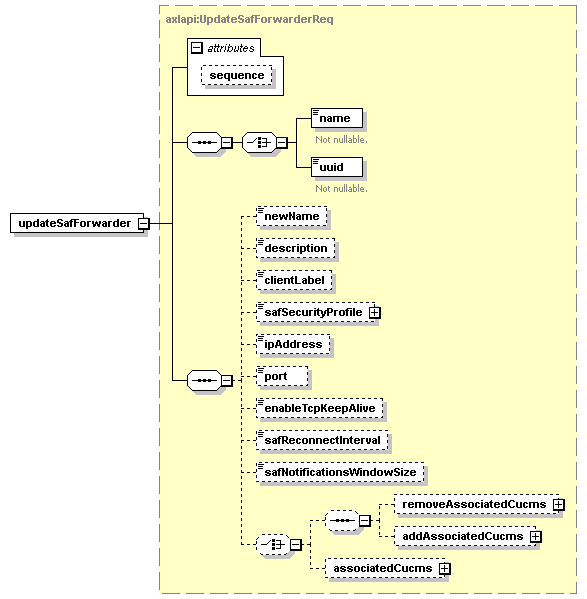

| diagram |  | ||||||||||||
| namespace | http://www.cisco.com/AXL/API/10.5 | ||||||||||||
| type | axlapi:UpdateSafForwarderReq | ||||||||||||
| properties |
|
||||||||||||
| children | name uuid newName description clientLabel safSecurityProfile ipAddress port enableTcpKeepAlive safReconnectInterval safNotificationsWindowSize removeAssociatedCucms addAssociatedCucms associatedCucms | ||||||||||||
| attributes |
|
||||||||||||
| source | <xsd:element name="updateSafForwarder" type="axlapi:UpdateSafForwarderReq"/> |